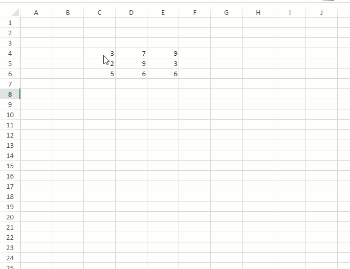
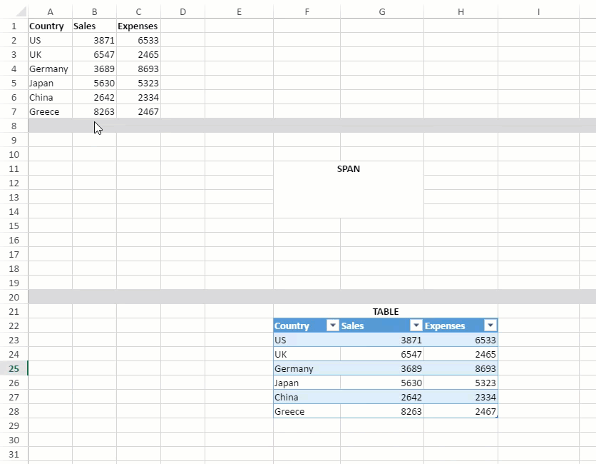
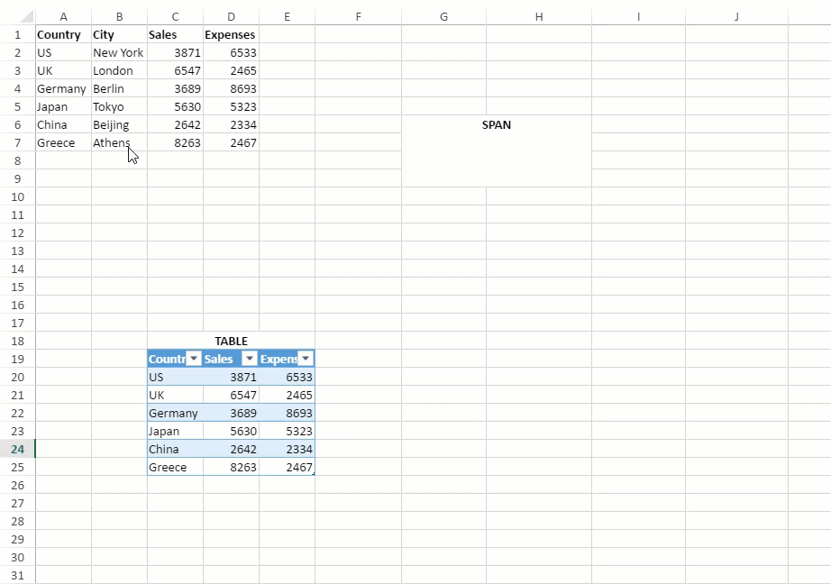
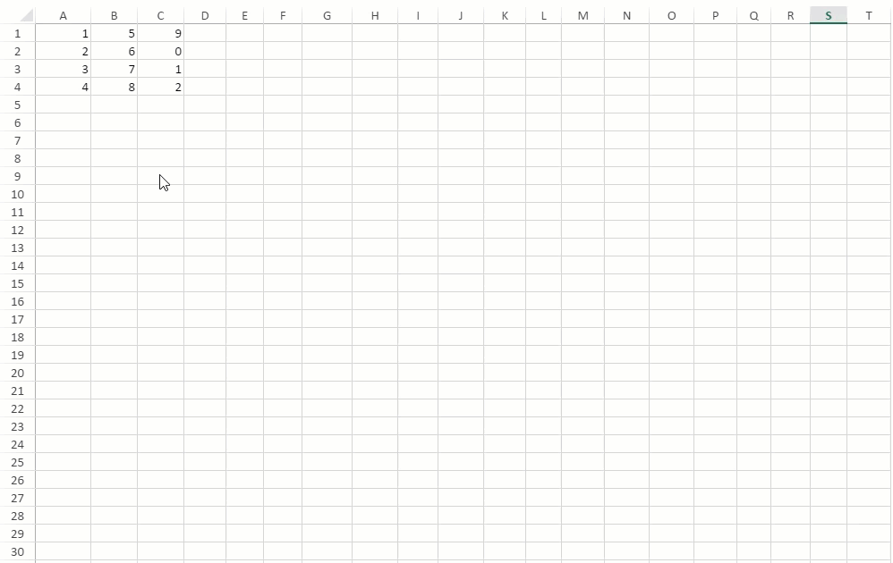
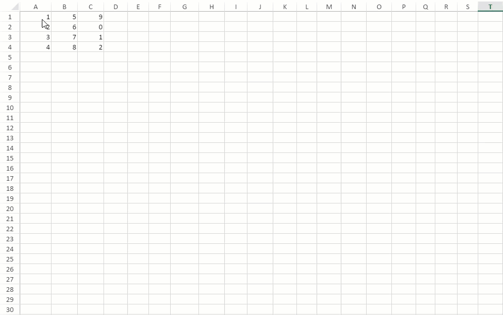

In SpreadJS, users can insert cut or copied cells in any spreadsheet of a workbook by using 'Insert Cut/Copied Cells' option from the context menu. While inserting cells, the context menu provides 2 sub-options:
- Shift Cells Right
- Shift Cells Down

Shift cells right: When a cut or copied cell(s) is inserted, any data item(s) to the right shifts further towards right (the number of columns shifted is equal to the number of inserted cells).
The below screenshot depicts the behavior of existing data, span or table when they are shifted towards right.

The below screenshot displays that an exception is thrown if the existing span or table needs to be split while shifting towards right.

Shift cells down: When a cut or copied cell(s) is inserted, any data item(s) below it shifts downwards (the number of rows shifted is equal to the number of inserted cells).
The below screenshot depicts the behavior of existing data, span or table when they are shifted downwards.

The below screenshot displays that an exception is thrown if the existing span or table needs to be split while shifting downwards.

Insert Cut or Copied Cells in Headers
You can also use 'Insert cut or copied cells' option to insert data in row or column headers. The total number of columns or rows in the spreadsheet should be divisible by the number of cells to be inserted. Otherwise, the 'Insert cut or copied cells' option won't be displayed in the context menu. The data of cut or copied cells is replicated throughout the row or column header.
The below screenshot depicts a spreadsheet which contains 210 rows and 20 columns. When data of 3 columns is copied and inserted in row header, ‘Insert copied cells’ option is not displayed as 20 is not divisible by 3. Whereas when data of 2 columns is copied and inserted in row header, it gets successfully inserted as 20 is divisible by 2.

When data of 4 rows is inserted in column header, ‘Insert copied cells’ option is not displayed as 210 is not divisible by 4. Whereas when data of 3 rows is inserted in column header, it gets successfully inserted as 210 is divisible by 3.

Note: Data is not inserted if the row area already contains any data, table or span.